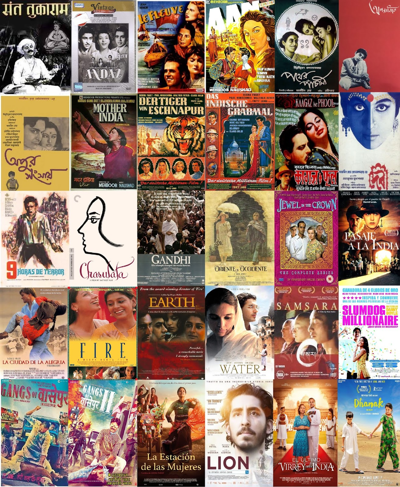
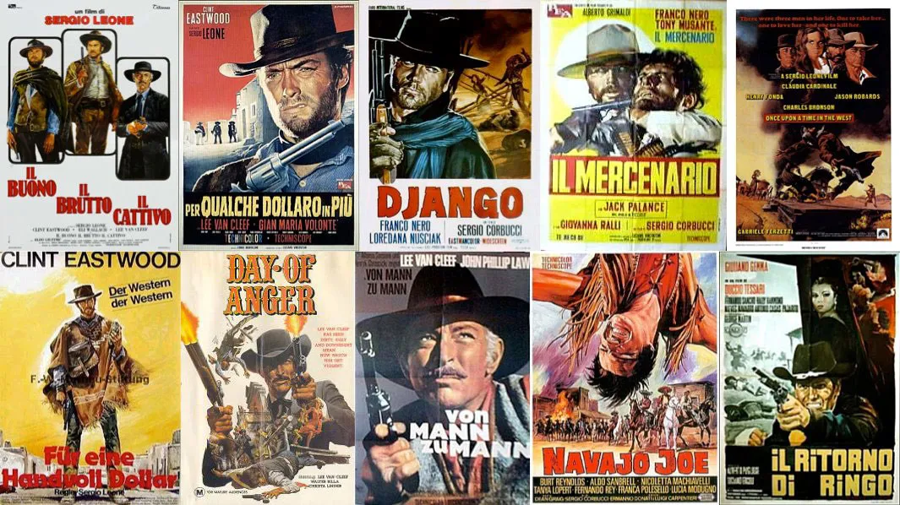
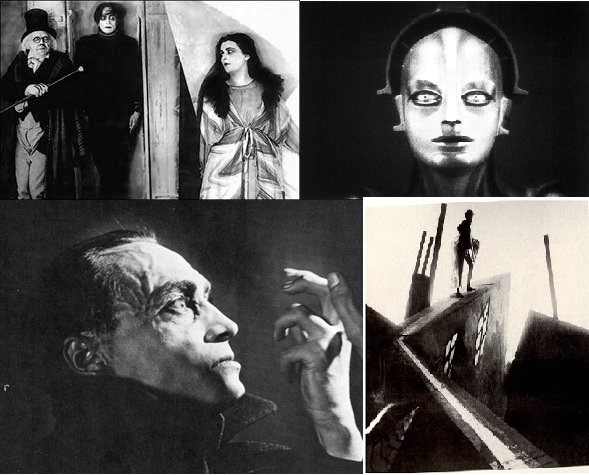

Ubicaciones del Cine
Bienvenidos a nuestro viaje cinematográfico, una aventura que nos llevará a través del cine en diferentes países del mundo.
Bienvenidos a nuestro viaje cinematográfico, una aventura que nos llevará a través del cine en diferentes países del mundo.
El cine de Japón tiene una historia que abarca más de 100 años. La importación desde Francia de un cinematógrafo de los hermanos Lumière en 1897 marcó los albores del cine en Japón. Japón tiene una de las industrias cinematográficas más antiguas y más grandes del mundo; en 2010, fue el cuarto más grande productor de largometrajes a nivel mundial. Japón ha ganado cinco veces el Premio Óscar a la mejor película de habla no inglesa, más que cualquier otro país asiático.
Las películas estadounidenses son conocidas en todo el mundo y han tenido un gran impacto en la cultura global. El cine estadounidense ha tenido un gran impacto en la industria cinematográfica en todo el mundo desde principios del siglo XX. Estados Unidos es hogar de Hollywood, el centro más grande de la industria cinematográfica.
El cine de India, también conocido como Bollywood, es el mayor productor de películas en el mundo. El cine de India es el más grande del mundo en términos de cantidad de películas producidas y el número de entradas vendidas. Las películas de Bollywood son conocidas por su música, baile y drama. El cine de India es muy popular en todo el mundo, especialmente en Asia y Europa.
Conocido por su cine de autor y sus festivales de cine, como el Festival de Cine de Cannes, el cine de Francia es conocido por ser inventivo y artístico. El cine francés ha sido responsable de muchas innovaciones en la cinematografía y ha producido algunas de las películas más influyentes y aclamadas de la historia del cine. El cine francés ha sido un líder en la industria cinematográfica mundial desde los primeros días del cine.
El cine de México es conocido por su diversidad y calidad. El cine mexicano ha sido reconocido en todo el mundo por su originalidad y creatividad. El cine mexicano ha sido un líder en la industria cinematográfica mundial desde los primeros días del cine.
La industria cinematográfica de Corea del Sur inició en la década de 1940 y continúa vigente. Las películas surcoreanas han sido fuertemente influenciadas por eventos como la ocupación japonesa, la Guerra de Corea, la censura del gobierno, la globalización y la democratización del país asiático. El resurgimiento de la industria con la nueva ola del cine coreano desde finales de los años 1990 hasta el presente produjo las dos películas más taquilleras del país, "The Admiral: Roaring Currents" (2014) y "Extreme Job" (2019), así como producciones ganadoras de premios en el circuito de festivales, entre las que destacan "Pietà" (2012) y "Parásitos" (2019), ganadora de la Palma de Oro y el Óscar a mejor película.

El cine en Colombia ha experimentado un crecimiento significativo en las últimas décadas. Colombia ha producido una serie de películas aclamadas que han recibido reconocimiento internacional.

El cine de Rusia ha tenido distintas etapas en la historia rusa, desde los orígenes importando los Zares la novedad desde Francia, pasando por el emblemático cine soviético y llegando al moderno cine de la actual Federación de Rusia. El primer film rodado en Rusia fue tomado por un camarógrafo de los Lumière, se trataba de la coronación del Zar Nicolás II. Poco tiempo después abrirían salas de exhibición de las casas Pathé y Gaumont. En 1908, Aleksandr Drankov produce el primer film narrativo ruso "Stenka Razin", dirigido por V. Romashkov.

La historia del cine italiano comenzó apenas algunos meses después de que los hermanos Lumière hubieran descubierto el medio, cuando el papa León XIII fue filmado por algunos segundos mientras bendecía la cámara fotográfica. Durante la época del cine mudo, en Italia se produjo un elevado número de películas. Se ha calculado que hasta 1930 se realizaron 9816 filmes de diversa extensión, de las que han sobrevivido unas 1500. Es de destacar el Spaghetti Western, conocido también como western europeo o eurowestern, un subgénero particular del western creado y desarrollado por directores italianos, que estuvo de moda en los años 1960 y 1970 y que se caracteriza por tener producciones europeas, en contraste con las películas tradicionales del género que se filmaban en los Estados Unidos.
El cine de Alemania se remonta a los primeros años de vida del medio con la obra de Max Skladanowsky. Es especialmente influyente durante los años de la República de Weimar con los expresionistas alemanes como Robert Wiene y Friedrich Wilhelm Murnau. El cine expresionista alemán es un movimiento cinematográfico que tuvo un gran impacto en la historia del cine, influyendo de manera decisiva a géneros como el cine negro o el cine de terror. Este estilo de hacer cine tiene su correspondencia con la corriente expresionista, llamada así por contraste con la corriente impresionista del siglo XIX en pintura, es decir, con aquel tipo de pintura en la que prima la «expresión subjetiva» sobre la representación de la objetividad. El expresionismo alemán en el cine refleja los conflictos internos de su audiencia alemana de la década de 1920 al dar a sus problemas una presencia externa ineludible. Al rechazar el realismo cinematográfico, las películas expresionistas muestran interpretaciones dramáticas y revolucionarias de la condición humana. El cine alemán ha hecho grandes aportaciones técnicas y artísticas al cine durante el periodo de 1918-1933.
